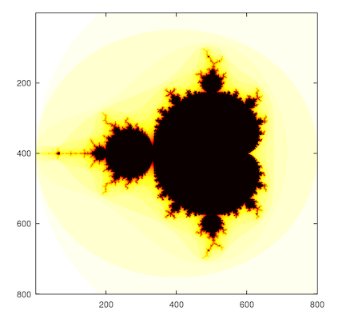
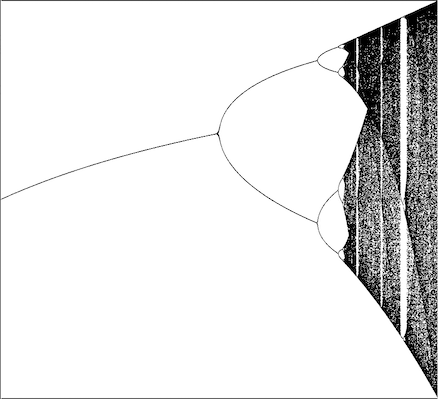

Random stuff I do
- Videos of Solar Events
- Random videos on QGIS
- The Logistic Map
I made these videos of a solar flare and a Coronal Mass Ejection (CMEs). I learnt about them in a very recent national level seminar held on "Kinematics of Coronal Mass Ejections from the Sun". I made these using the website HelioViewer. Do get in touch with me if you wish to learn more! The first video is of a solar flare which happened on 29th July 2010. The second and third videos are of a Coronal Mass Ejection from 9th August 2011, caught on separate wavelengths.
I learnt how to make videos from QGIS from the LinkedIn Learning course "Learning QGIS". Datasets are available within the course materials. I would rate this course a solid 9 on 10, as the instructor explains the process really well, and the pace isn't very fast either. It is easy to do the hands-on part as well. Will surely recommend this to anyone with interests in Earth Observation and Remote Sensing!


One day while aimlessly scrolling through Youtube, I came across this video by Veritasium. After watching the same, I began looking up about the Logistic Map everywhere. These plots were made by me on GNU Octave. The same can be done on MATLAB, however, I didn't have access to it when I wrote the code. I unfortunately have lost the code for both the plots in my hard drive, and will have to look for the same. Once I find them, I'll upload them on GitHub. I might as well just write the code once again:)